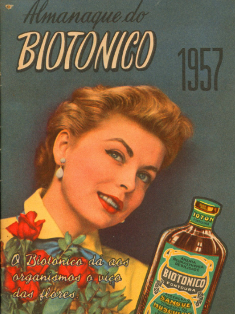
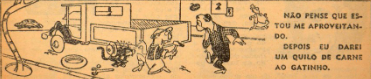

ESPORTES & HUMOR
As crônicas da semana
Uma seleção fina de piadas de salão, anedotas e charges satíricas direto da capital. Veja também o balanço das crônicas esportivas e o movimento dos principais clubes do país neste início de ano.
"Mensageiro da Saúde, da Lavoura e do Lar"
A imortal obra de conscientização de Monteiro Lobato retorna em edição comemorativa de 40 anos de circulação nacional.

Flagrante do caboclo Jeca Tatu, símbolo do despertar da saúde nas populações rurais do país.A
história que comoveu e transformou o Brasil profundo ganha novas páginas explicativas sobre a importância do saneamento e do vigor físico. O Jeca Tatu, outrora símbolo de abandono e fadiga, encontra no maravilhoso Biotônico a força motriz para o seu reerguimento completo, servindo de exemplo prático para todos os trabalhadores do nosso solo.
Esta folha orgulha-se de estampar o guia completo de utilidades que acompanha este clássico da nossa literatura, integrando ensinamentos práticos que vão da lavoura ao bem-estar do ambiente doméstico.
Uma seleção fina de piadas de salão, anedotas e charges satíricas direto da capital. Veja também o balanço das crônicas esportivas e o movimento dos principais clubes do país neste início de ano.
Agrônomos renomados detalham os conselhos agrícolas necessários para o pequeno e o grande produtor, trazendo tabelas de plantio específicas para o clima de cada região brasileira e orientações para a medicina veterinária.
Tudo o que a dona de casa precisa saber para a boa condução do lar: o horóscopo do mês atualizado pelos astros, as previsões do tempo e as tabelas com as fases lunares fundamentais para as atividades domésticas.
Os átomos, grãos da matéria, os elétrons, grãos de eletricidade, os fótons, grãos de luz, são os três corpúsculos fundamentais em que se baseia a física moderna. A matéria pode ser dividida em partículas extremamente pequenas sem perder nenhuma de suas propriedades essenciais.
O ouro, por exemplo, mediante o simples processo do martelo, pode ser transformado em lâminas tão finas que seria necessário empilhar dez mil delas para se obter uma espessura de um milímetro. A divisibilidade da matéria não é entretanto infinita e o termo extremo dessa divisão, a partícula menor que se pode encontrar em estado livre é chamada de molécula.
Os meios de observação de que se dispõe atualmente, os melhores microscópios ópticos ou eletrônicos, mesmo os ultramicroscópicos, não permitem ver diretamente a molécula isolada. O tamanho de tais moléculas é da ordem de 2,2 milionésimos de milímetro, ou 22 angströms.
ELA está livre das moléstias peculiares à mulher, livre do mal-estar e dores periódicas, porque regulariza as funções do útero e corrige os seus distúrbios, usando o maravilhoso...
